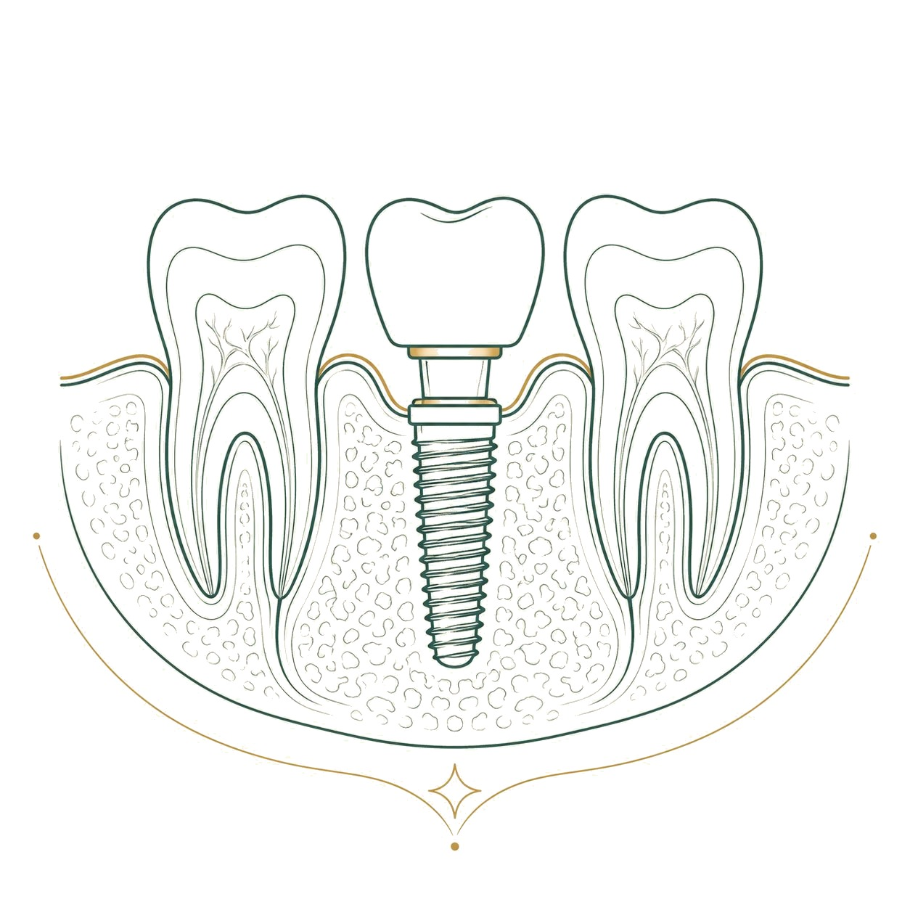

Tüm dişleri eksik olan ya da kalan dişleri kurtarılamayacak durumda olan kişiler için uzun yıllar tek seçenek hareketli protezdi. Bugün, az sayıda implant üzerine sabit diş yapılan yaklaşımlar bu tabloyu değiştirdi; All-on-4 bunların en bilinenidir. Bu rehberde All-on-4'ün ne olduğunu, kimler için uygun olduğunu, hareketli protez ve klasik implant tedavisiyle farkını ve sürecin nasıl ilerlediğini anlatıyoruz.
All-on-4 nedir?
All-on-4, bir çenedeki bütün dişlerin, o çeneye yerleştirilen dört implantın üzerine sabitlenen tek parça bir protezle yerine konduğu tedavi yaklaşımıdır. Adı da buradan gelir: "dördünün üzerinde hepsi". Ön bölgedeki iki implant genellikle dik, arka bölgedeki iki implant ise belirli bir açıyla yerleştirilir. Açılı yerleştirme, kemiğin daha yoğun olduğu bölgeleri kullanmayı sağlar ve bazı hastalarda kemik eklemeye olan ihtiyacı azaltır.
Protez implantlara vidalanır; hasta tarafından takılıp çıkarılmaz. Gerektiğinde, örneğin kontrol ya da onarım için, hekim tarafından sökülebilir.
Hareketli protezden ve tek tek implantlardan farkı
Hareketli protez diş etine ve damağa oturur; konuşurken ya da yemek yerken oynayabilir, zamanla altındaki kemik erir ve uyumu bozulur. All-on-4 protezi ise kemiğe bağlı implantlara tutunduğu için sabittir ve üst çenede damağı kapatmaz; tat alma ve konuşma daha doğal hissedilir.
Her eksik dişin yerine ayrı implant yapılan klasik yaklaşımda daha fazla implant gerekir ve çoğu zaman daha fazla kemik desteği aranır. All-on-4 ise az sayıda implantla tüm çeneyi tamamlar. Bununla birlikte All-on-4 her durum için "daha iyi" değildir; bazı hastalarda altı implantlı ya da implant üstü hareketli seçenekler daha uygun olabilir.
Kimler için uygundur?
All-on-4 genellikle şu kişiler için değerlendirilir: bir çenesinde hiç dişi kalmamış olanlar, kalan dişleri ileri diş eti hastalığı ya da kırıklar nedeniyle kurtarılamayacak olanlar ve hareketli protezini kullanmakta zorlananlar. Yaş tek başına engel değildir; belirleyici olan genel sağlık ve kemik durumudur.
Bazı durumlar iyileşmeyi zorlaştırır ve dikkatli değerlendirme gerektirir: kontrol altında olmayan şeker hastalığı, yoğun sigara kullanımı, kemik yapısını etkileyen bazı ilaçlar ve baş-boyun bölgesine uygulanmış ışın tedavisi bunlardan bazılarıdır. Kullandığınız bütün ilaçları ve geçirdiğiniz hastalıkları muayenede açıkça belirtmeniz gerekir.
Uygunluk nasıl değerlendirilir?
Değerlendirme ağız içi muayeneyle başlar. Panoramik röntgen klinikte çekilir; gerekli görülürse tomografi istenir. Çene kemiğinin miktarı ve yoğunluğu, sinirlerin ve sinüslerin konumu bu görüntülerle incelenir. Bu görüntüler üzerinde implantların yeri, açısı ve uzunluğu planlanır.
Gerekirse kan değerleri istenir ya da genel sağlık durumu için hastanın kendi hekimiyle görüşülür. Protezin dişlerin görünümü, dudak desteği ve gülüş çizgisi açısından nasıl olacağı da bu aşamada konuşulur; çünkü All-on-4 yalnızca çiğneme değil, yüzün alt bölümünün görünümünü de etkiler.
Süreç ve ziyaretler
All-on-4 süreci planlama, cerrahi, iyileşme ve kalıcı protez olmak üzere birkaç aşamadan oluşur. Planlama ziyaret(ler)inde muayene, görüntüleme ve ölçüler alınır. Cerrahi gün, kurtarılamayacak dişler varsa çekilir ve dört implant yerleştirilir; işlem lokal anestezi altında yapılır, gerekli görülürse ek sedasyon seçenekleri konuşulur.
Uygun durumlarda implantların üzerine cerrahiden kısa süre sonra geçici sabit bir protez takılır; böylece hasta iyileşme döneminde dişsiz kalmaz. Geçici protezin ne zaman takılacağını hekim planlar. Kemik ile implantların kaynaşması için birkaç aylık bir iyileşme dönemi beklenir; bu sürede kontrol ziyaretleri yapılır. Ardından ölçüler alınır, prova yapılır ve kalıcı protez takılır.
Toplam ziyaret sayısı kişiye göre değişir; muayene ve planlama, cerrahi, kontroller, ölçü ve prova ile kalıcı protezin takılması ayrı ziyaretlerdir. Ziyaret sayısı muayenede planlanır.
İyileşme döneminde neler beklenir?
Cerrahiden sonraki ilk günlerde şişlik, morarma ve hassasiyet olağandır; hekiminizin önerdiği ağrı kesici ve soğuk uygulama bu dönemi kolaylaştırır. İlk haftalarda geçici protez üzerinde sert ve çok çiğneme isteyen yiyeceklerden kaçınılır; yumuşak beslenme önerilir.
Sigara, implantların kemikle kaynaşmasını olumsuz etkiler; bu dönemde bırakmak ya da en azından ara vermek önemlidir. Ağız hijyeni iyileşmenin parçasıdır: hekiminizin önerdiği gargara ve yumuşak fırçayla bölge temiz tutulur.
Uzun vadede bakım
Sabit protez çürümez, ama implantların çevresindeki diş eti ve kemik iltihaplanabilir. Bu durum, doğal dişlerdeki diş eti hastalığına benzer ve ihmal edilirse implant kaybına yol açabilir. Bu yüzden protezin altı ve implant çevresi her gün diş fırçası, ara yüz fırçası ve gerekirse ağız duşuyla temizlenir.
Düzenli kontrollerde protez gerekirse sökülür, implant çevresi temizlenir ve vidaların sıkılığı kontrol edilir. Gece diş sıkma varsa protezi korumak için gece plağı önerilebilir.
Kontrol aralığı ilk yıl daha sık, sonrasında hekiminizin belirlediği düzende sürer. Protezde çatlak, vida gevşemesi hissi, çiğnerken tıkırtı ya da implant çevresinde kanama ve kötü koku fark ederseniz kontrol zamanını beklemeden hekiminize başvurun. Erken fark edilen sorunlar çoğu zaman küçük bir müdahaleyle giderilir; ihmal edilen sorunlar ise implant çevresindeki kemiği etkileyebilir.
Protezin görünümü ve konuşma
All-on-4 protezi yalnızca dişleri değil, çoğu zaman kaybedilen diş eti ve kemiğin bir bölümünü de yerine koyar. Bu nedenle protezin üst kısmında diş eti renginde bir bölüm bulunabilir; gülerken bu bölümün görünmemesi planlamada dikkate alınır. Dişlerin boyu, rengi ve dizilimi yüz yapısına ve dudak desteğine göre belirlenir; uzun süre dişsiz kalmış kişilerde yanakların ve dudakların daha dolgun görünmesi sık karşılaşılan bir sonuçtur.
Yeni protezle konuşmaya alışmak birkaç gün ile birkaç hafta sürebilir; özellikle "s" ve "ş" seslerinde ilk günlerde farklılık hissedilebilir. Geçici protez döneminde edinilen deneyim, kalıcı protezin biçimlendirilmesinde kullanılır; bu dönemde fark ettiğiniz her şeyi hekiminize söylemeniz kalıcı protezin size daha iyi uymasını sağlar.
Sık sorulan sorular
All-on-4 ile hemen yemek yiyebilir miyim?
Geçici protezle ilk haftalarda yumuşak beslenme önerilir. Kalıcı protezden sonra çoğu yiyecek rahatça çiğnenir.
Kemiğim az, yine de olur mu?
Açılı implantlar sayesinde bazı hastalarda kemik eklemeden tedavi mümkündür. Ancak kemik çok yetersizse farklı bir plan gerekebilir; bunu muayene ve görüntüleme gösterir.
All-on-4 protezi çıkarılır mı?
Hasta çıkaramaz; protez sabittir. Hekim, kontrol ve bakım için gerektiğinde sökebilir.
Alt ve üst çeneye birlikte yapılabilir mi?
Yapılabilir; iki çenenin aynı dönemde mi yoksa sırayla mı tedavi edileceğine planlamada karar verilir.
İmplantlar ömür boyu kalır mı?
İmplantların uzun yıllar kalması; ağız bakımına, düzenli kontrollere ve sigara gibi risk etkenlerine bağlıdır. Hiçbir tedavi için kesin süre garantisi verilemez.
Tedavi sırasında dişsiz kalır mıyım?
Uygun durumlarda cerrahiden kısa süre sonra geçici sabit protez takılır; bu mümkün değilse geçici bir hareketli protez kullanılabilir.
Şeker hastasıyım, All-on-4 olur mu?
Şeker hastalığı kontrol altındaysa tedavi çoğu zaman mümkündür. Kan şekeri değerleriniz ve kendi hekiminizin görüşü planlamada değerlendirilir.
All-on-4 protezinin dişleri hangi malzemeden yapılır?
Protez dişleri, dayanıklılık ve estetik ihtiyaca göre farklı malzemelerden hazırlanabilir. Malzeme seçimi; karşı çenenin durumu, diş sıkma alışkanlığı ve görünüm beklentisine göre planlamada konuşulur.
Kaynakça
- International Team for Implantology (ITI). Hasta bilgilendirme kaynakları. iti.org
- American Dental Association (Amerikan Diş Hekimleri Birliği). Diş implantları, MouthHealthy. mouthhealthy.org
- Türk Diş Hekimleri Birliği (TDB). Ağız ve diş sağlığı hasta bilgilendirme kaynakları. tdb.org.tr
Bu konu hakkında soru sormak ister misiniz? Diş hekimlerimize dilediğiniz saatte yazabilirsiniz.
Bize yazın